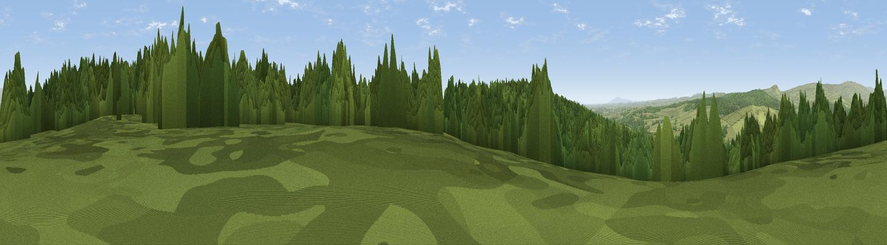

Viewpoint c11603_6968
#37585 in England · top 67% of its area beats it · — · open accessWhere it is
The exact computed spot (NY 48425 80175). Click the marker for map links.
Public access: this spot lies on mapped open-access land (CRoW Act 2000) — you may roam here on foot. Computed from Natural England's CRoW access layer and OpenStreetMap rights of way — not the legal definitive map. Always verify locally.
The view, rendered

A 360° render of this exact spot computed from the terrain model, tree cover and land cover — summer colours, afternoon light, calibrated against photographs of famous viewpoints. Real trees, hedges and buildings will differ in detail.
The panorama
Grey silhouette: terrain skyline in each direction (720 bearings, Earth curvature and refraction included). Dashed green: skyline with trees (+15 m) and buildings (+8 m) as obstacles. Blue strip: how far the ground is visible on each bearing.
Where the view opens
Wedge length = distance to the farthest visible ground on that bearing (vegetation-aware). Rings at 10, 25 and 50 km.
What fills the view
55% woodland · 44% grassland ·
Angular shares of the visible panorama (visual magnitude), not map area. Landscape diversity 0.32 (0–1 Shannon).
Key numbers
More beautiful places nearby
The staircase of upgrades: each row has a higher view potential than everything closer. Driving times are estimates from straight-line distance, calibrated against real road routing — check an actual route before setting out.
| Place | Direction | Drive | Score |
|---|---|---|---|
| Viewpoint c11590_6960 | SSW · 1 km | ~2 min | 29.9 |
| Viewpoint c11585_6956 | SSW · 1 km | ~3 min | 30.5 |
| Viewpoint c11631_6984 | NNE · 2 km | ~4 min | 67.3 |
| Viewpoint c11570_6936 | SW · 2 km | ~6 min | 70.0 |
| Viewpoint c11644_7156 | ENE · 10 km | ~19 min | 80.8 |
| Viewpoint c11995_7247 | NE · 24 km | ~39 min | 82.1 |
| Viewpoint near Bassenthwaite | SSW · 55 km | ~77 min | 82.8 |
| Viewpoint c12273_7856 | NE · 55 km | ~77 min | 83.7 |
55.11327, -2.81006 · source: screening · position refined by local search. Computed location — check access rights before visiting.